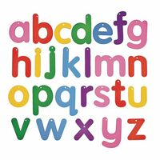

Para efeitos da nota atribuída à resolução de exercícios ao longo do semestre - Submeter até 23:59 de 15 de Maio
(o problema continuará depois disponível para submissão, mas sem contar para a nota)
[para perceber o contexto do problema deve ler o guião da aula #06]

Suponha que tem inicialmente uma string s constituída por letras minúsculas do alfabeto inglês {a, b, c, ..., z}. Uma substring s[a,b] da string s é uma subsequência contígua formada pelas letras sa, sap1, ..., sb. Por exemplo, "ritmo", "alg" e "gori" são substrings de "algoritmo", mas "gomo", "alri" ou "imo" não o são.
Neste problema vai receber uma série de queries, de ações a tomar, que podem ser de dois tipos diferentes:
Dada uma string inicial s e um lista de queries como atrás descrito, a sua tarefa é indicar o número de letras diferentes para cada uma das queries que pedem o número de diferentes letras numa substring.
Na primeira linha vem uma string s constituída unicamente por letras minúsculas do alfabeto inglês.
Na segunda linha bem um número Q indicando o número de queries a responder. Seguem-se Q linhas cada uma indicando uma querie num dos dois formatos seguintes:
O output deve ter uma linha por cada query do tipo 2 com a resposta correspondente, ou seja o número de letras distintas na substring pedida.
São garantidos os seguintes limites em todos os casos de teste que irão ser colocados ao programa:
| 1 ≤ |s| ≤ 100 000 | Tamanho da string s | |
| 1 ≤ Q ≤ 100 000 | Número de queries | |
| 1 ≤ pos ≤ |s| | Posição da letra a substituir numa query de tipo 1 | |
| 1 ≤ a ≤ b ≤ |s| | Posição inicial e final da substring a considerar numa query de tipo 2 |
abacaba 5 2 1 4 1 4 b 1 5 b 2 4 6 2 1 7
3 1 2
Desenho e Análise de Algoritmos (CC2001)
DCC/FCUP - Faculdade de Ciências da Universidade do Porto